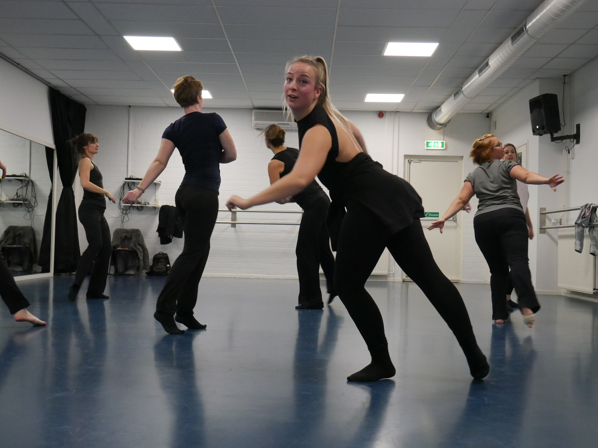

Corona Virus
Lieve leerlingen, ouders/ verzorgers,
Helaas moet ik jullie mededelen dat ook Babs Balletschool haar deuren zal sluiten i.v.m. het Corona virus.
De veiligheid van leerlingen en docenten staat voorop en daarom volgen we de richtlijnen van het RIVM die nu ook oproept de scholen te sluiten t/m 6 april.
We zullen jullie via de mail en/of groeps-app’s op de hoogte houden van verdere ontwikkelingen.
Voor nu, namens ons allemaal, blijf gezond en hopelijk tot snel dans!
Seizoen 19-20
Een Gratis proefles doen? dat kan! Neem even contact op voor een proefles. Inschrijven voor de lessen: inschrijfformulier
DansDag
Op zondag 19 april organiseert Babs Balletschool een DansDag. De hele dag zijn er in de dansstudio diverse dansworkshops te volgen voor verschillende leeftijden en niveaus. Met plezier kan ik alvast verklappen dat Marc Beaugendre, oud-danser van Introdans twee Klassieke lessen komt verzorgen, daarnaast is er Folklore, Modern, Burleske en nog veel meer!
De Dansdag zal worden verschoven naar een later moment dit jaar, we houden jullie op de hoogte.
Nieuwe lessen

Kleuterballet nu ook op donderdag om 14:45
Basisles Klassiek ballet kids va 9 jaar nu ook donderdag 15:30
Beginners Klassiek Ballet volwassenen vanaf januari op woensdag om 20:30
Artez Project
 vanaf 27 januari is Sarah, stagiaire van ArtEZ dansacademie, gestart met het ArtEZ project. Zij studeert met een groep dansers vanuit onze balletschool een choreografie in. Een unieke ervaring waar we heel trots op zijn!
De Eind presentatie op 4 april in het theater van ArtEZ dansacademie, zalop die dag helaas niet doorgaan. Artez zoekt nog een ander moment, hopelijk kan het dan alsnog doorgaan.
Wordt vervolgd...
vanaf 27 januari is Sarah, stagiaire van ArtEZ dansacademie, gestart met het ArtEZ project. Zij studeert met een groep dansers vanuit onze balletschool een choreografie in. Een unieke ervaring waar we heel trots op zijn!
De Eind presentatie op 4 april in het theater van ArtEZ dansacademie, zalop die dag helaas niet doorgaan. Artez zoekt nog een ander moment, hopelijk kan het dan alsnog doorgaan.
Wordt vervolgd...
BalletPuzzel
 ⬆⬆⬇⬇⬅➡⬅➡ ba
⬆⬆⬇⬇⬅➡⬅➡ ba